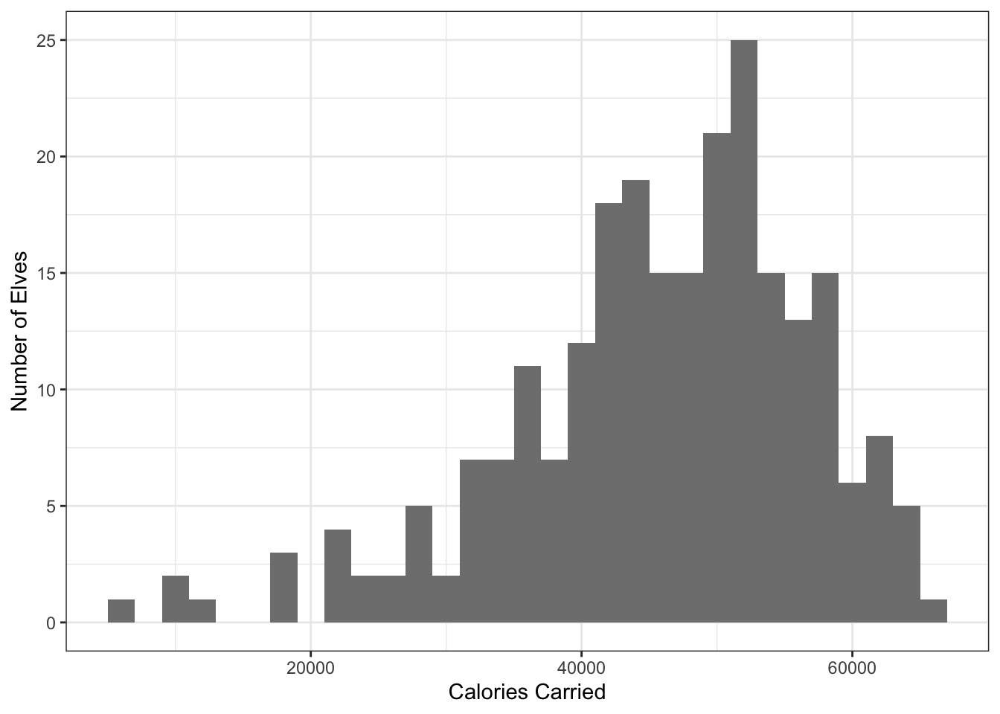

Code
# A tibble: 6 × 1
calories
<chr>
1 5474
2 4920
3 5381
4 8650
5 11617
6 7193 Brady Johnston
Document for workingo out solutions to the advent of code.
The approach that I am going to be taking for the R code is a very {tiydyverse}-centric, trying to leverage nested dadtaframes and mapping as much as possible.
Read in the data:
Code
# A tibble: 6 × 1
calories
<chr>
1 5474
2 4920
3 5381
4 8650
5 11617
6 7193 Each data point is separated by an empty line, we can check when those lines are empty and count upwards, to label each datapoints for each elf.
Code
dat <- dat |>
mutate(
calories = as.numeric(calories),
elf = cumsum(is.na(calories)) + 1
)
datNow we can remove the empty rows, and nest the data for each elf.
For each nested dataframe, we can sum together the calories and arrange the dataframe based on the descending total of calories
# A tibble: 242 × 3
# Groups: elf [242]
elf data total
<dbl> <list> <dbl>
1 31 <tibble [12 × 1]> 66306
2 160 <tibble [14 × 1]> 64532
3 161 <tibble [1 × 1]> 64454
4 53 <tibble [14 × 1]> 64230
5 9 <tibble [7 × 1]> 63623
6 133 <tibble [14 × 1]> 63339
7 202 <tibble [11 × 1]> 62944
8 177 <tibble [6 × 1]> 62852
9 109 <tibble [3 × 1]> 62425
10 181 <tibble [3 × 1]> 62355
# … with 232 more rowsWe need to first ungroup the rows, then rank the totals and get only the top 3 values.
Some additional visulisations of the daily data.
dat |>
ggplot(aes(total)) +
geom_histogram(
fill = "gray50",
binwidth = 2000
) +
labs(
x = "Calories Carried",
y = "Number of Elves"
) +
theme_bw()